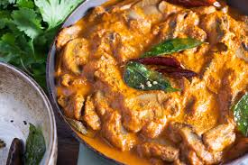

Mushroom Masala

Description
This Mushroom Masala recipe is an easy, delicious Punjabi style one-pot
mushroom Curry made with white button mushrooms in a spiced onion-tomato
gravy. Though I have made the curry in a pan, I also cover Instant Pot
instructions after my step-by-step guide below.
Ingredients
- ¾ to 1 cup chopped onions 100 grams or 2 medium onions
- 1 teaspoon chopped ginger or 1 inch ginger
- 1 teaspoon chopped garlic or 4 to 5 medium-sized garlic
-
½ cup chopped tomatoes (tightly packed) 70 grams or 2 small to medium
tomatoes or ⅓ cup tomato puree
- 200 to 250 grams white button mushrooms
- 4 tablespoon Curd (yogurt) whisked till smooth
- 3 tablespoons oil any neutral oil
- ½ teaspoon cumin seeds
- 2 small tejpatta or 1 medium to large tejpatta (Indian bay leaf)
- ½ inch cinnamon
- 1 black cardamom (optional)
- 2 green cardamoms
- 3 cloves
- 1 single strand of mace (optional)
- ¼ teaspoon turmeric powder (ground turmeric)
- ½ teaspoon red chilli powder
- 1 teaspoon Coriander Powder (ground coriander)
- ¾ cup water and ⅓ cup water for Instant Pot (add as needed)
- salt as required
- ¼ teaspoon Garam Masala
- ½ teaspoon dried fenugreek leaves (kasuri methi) (crushed)
- 2 tablespoon chopped coriander leaves (cilantro)
Method
-
Rinse or wipe dry the mushrooms. Slice off a part of the base stalk.
Then slice or chop them. Set aside.
-
In a grinder or blender, take the chopped onions, ginger and garlic.
Grind to a smooth paste without adding any water.
-
Remove this paste with a spoon or spatula in a bowl and set aside.
-
In the same jar, add the chopped tomatoes and make a smooth puree. No
need to blanch tomatoes before pureeing. Set the tomato puree aside.
- In a small bowl, whisk curd (yogurt) until smooth and set aside.
-
Heat oil in a pan and add the following whole spices - cumin seeds,
tejpatta, cinnamon, black cardamom, green cardamoms, cloves and a single
strand of mace.
-
Fry the spices for a few seconds until they become aromatic and
splutter.
- Lower the heat and add the ground onion-ginger-garlic paste.
-
Mix the paste with the oil. If the paste splutters then cover the pan
with a lid allowing for some space for the steam to pass.
-
On a low to medium heat stirring often continue to sauté until the onion
paste starts thickening.
-
Stir and sauté until the paste becomes golden. This sautéing of onion
paste takes some time. So to quicken the process add a pinch of salt.
-
Now add the tomato puree. Stir. Then add the spice powders - turmeric
powder, red chilli powder and coriander powder.
-
Mix well and sauté until you see oil releasing from the sides of the
masala.
- Add the sliced or chopped white button mushrooms.
-
Add the beaten curd (yogurt). As soon as you add yogurt, mix thoroughly
and quickly.
- Simmer on a low to medium flame for 2 to 3 minutes.
- Then add water.
- Season with salt. Mix very well.
-
Cover the pan with a lid. On a low to medium heat simmer the mushroom
masala for 18 to 20 minutes or until the mushrooms are tender.
-
Lastly add dried fenugreek leaves (crushed), garam masala powder and
chopped coriander leaves. Mix again. At this step you can add 1 to 2
tablespoons of heavy cream for a rich tasting curry.
- Serve mushroom masala hot or warm.